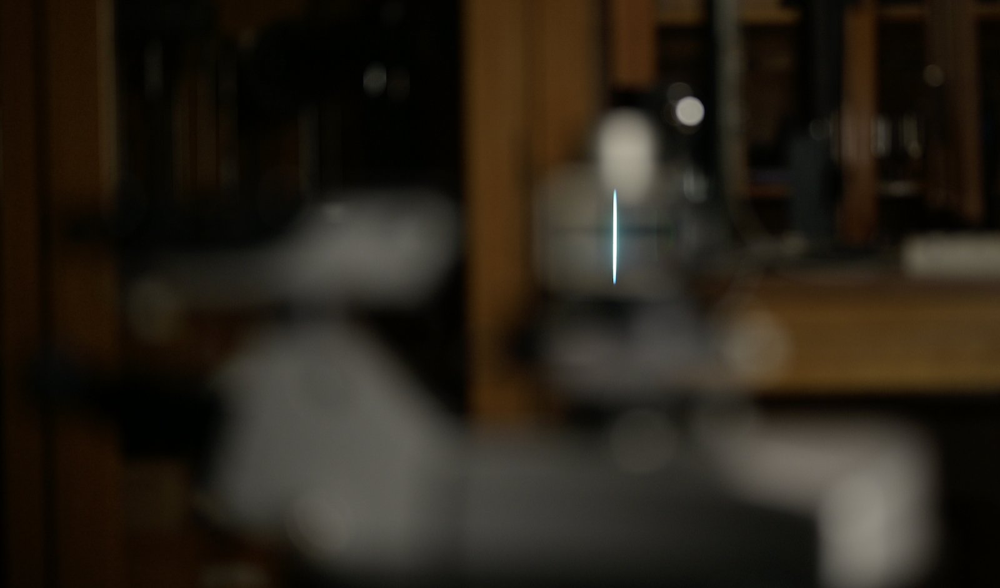
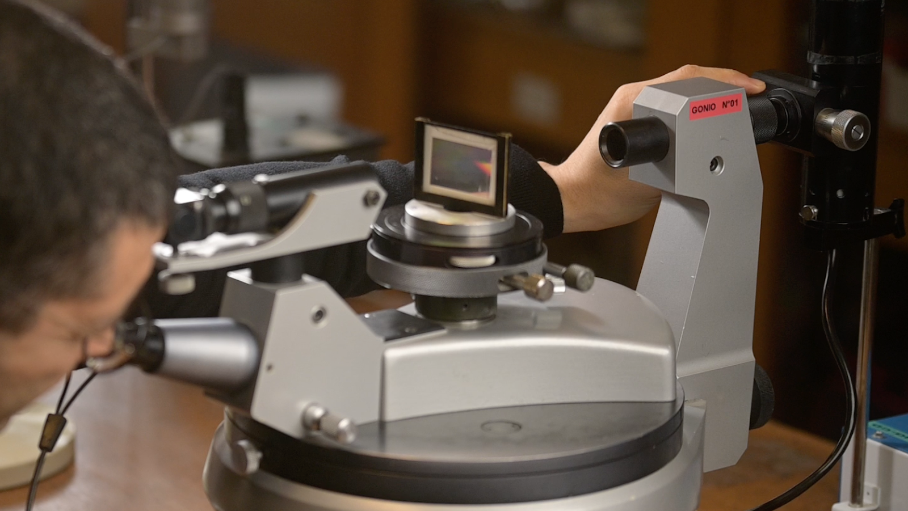

Le spectromètre à réseau
I - Mesurer des angles pour déterminer des longueurs d’onde
Prologue
 En colorimétrie,
on utilise différentes représentations du signal issu du capteur ou
scopes, pour effectuer les corrections nécessaires à une
reproduction consistante des couleurs.
En colorimétrie,
on utilise différentes représentations du signal issu du capteur ou
scopes, pour effectuer les corrections nécessaires à une
reproduction consistante des couleurs.
Pour un physicien, la lumière est un message duquel on
peut extraire de nombreuses informations.
Déterminer avec précision la fréquence d’un rayonnement, sa couleur exacte, est le point de départ de nombreuses analyses, dans des champs d’application très variés.
Pour s’assurer d’une reproducion fidèle des couleurs en photographie ou en vidéo, par exemple, on effectue des mesures physiques précises, tout le long de la chaîne de production, de la prise de vue à la projection finale.
Introduction
Un goniomètre est un instrument de précision qui sert à mesurer des angles.
 Un goniomètre de type Bouty. De droite à gauche, on
distingue : la fente source, le collimateur, le plateau et la lunette de
visée.
Un goniomètre de type Bouty. De droite à gauche, on
distingue : la fente source, le collimateur, le plateau et la lunette de
visée.
Un prisme ou un réseau de diffraction peuvent séparer le mélange de lumières colorées issu d’une source polychromatique.
Le spectromètre est l’instrument qui permet de séparer le faisceau de lumière issu d’une source polychromatique, c’est-à-dire considérée comme un mélange de lumières colorées, dans l’ensemble des lumières monochromatiques ou lumières colorées pures qui constituent son spectre, et d’obtenir une mesure de leurs longueurs d’onde.
On peut obtenir un spectromètre en associant le goniomètre avec un système dispersif comme le prisme qui réfracte chaque rayon coloré selon un angle différent.
On peut aussi utiliser un réseau qui diffracte la lumière incidente dans des directions différentes et dans des ordres différents.
 Une lampe à
vapeur de Mercure présente un spectre de raies.
Une lampe à
vapeur de Mercure présente un spectre de raies.
On a d’ailleurs pris l’habitude de classer les sources de
lumière en fonction de la nature de leur spectre : une lampe blanche
possède un spectre continu alors que les lampes à vapeurs
métalliques ont un spectre contenant un nombre discret de
raies, qui sont comme la signature de l’élément chimique qui
les a émis.
1 - Images d’une fente source à travers un réseau de diffraction
Approche expérimentale 1
La fente du collimateur est éclairée par une lampe spectrale à vapeur de mercure.
En regardant, à travers le réseau, directement dans l’axe du collimateur, on peut voir une image de la fente source, très lumineuse, et dont la couleur gris-bleuté est celle du mélange issu de la lampe.
 Image de la fente source à travers le réseau à
l’ordre zéro, dans la direction de la lumière incidente, mise au
point à l’infini.
En déportant le regard horizontalement, c’est à dire perpendiculairement à la direction des fentes du réseau, on peut voir d’autres images de la fente source, qui ont chacune une couleur pure, et dont l’ensemble constitue le spectre de raies de la lampe au mercure.
 Images colorées de la fente source à travers le
réseau à l’ordre 1, dans une direction différente de celle de
la lumière incidente, mise au point à l’infini.
Images colorées de la fente source à travers le
réseau à l’ordre 1, dans une direction différente de celle de
la lumière incidente, mise au point à l’infini.
En déportant le regard encore plus loin de l’axe optique, on peut observer d’autres images colorées de la fente former un second spectre.
En séance de travaux pratiques, vous pourrez vérifier qu’il est même possible d’en apercevoir un troisième.
Approche expérimentale 2
Dans la nouvelle configuration présentée ci-dessous, le même réseau est éclairé par le faisceau quasiment monochromatique d’un laser.
En faisant tourner le plateau, on peut faire varier l’angle sous lequel le réseau est éclairé.
Plus précisément, on fait varier l’angle d’incidence \(\theta_0\) de manière monotone entre zéro et 90 degrés puis de nouveau de manière monotone entre 90 degrés et zéro.
La tâche centrale reste immobile quel que soit l’angle d’incidence ; elle correspond à la partie de la lumière qui n’est pas déviée par le réseau.
En revanche, les autres tâches de diffraction se rapprochent de la tâche centrale puis s’en éloignent. Autrement dit, leur distance à la tâche centrale passe par un minimum.
On fait varier l’angle d’incidence \(\theta_0\) en faisant tourner le réseau sur
le plateau de bois. Pour une tâche de diffraction donnée, l’angle de
déviation \(D\) passe par un minimum
\(D_{min}\).
2 - La formule fondamentale du réseau
À partir de la loi de la réfraction dans le cas du prisme, ou à partir des principes de la diffraction dans le cas du réseau, on peut établir une expression mathématique, une formule, qui nous permet de calculer les longueurs d’onde à partir des angles que l’on peut mesurer directement.
La formule fondamentale du réseau,  Dans la formule
du réseau, les angles sont repérés par rapport à la normale \((N)\) au réseau.
Dans la formule
du réseau, les angles sont repérés par rapport à la normale \((N)\) au réseau.
dont nous admettrons la validité dans une première
approche, permet de déterminer les directions dans lesquelles on peut
trouver les maxima d’éclairement, en fonction des autres grandeurs
pertinentes.
\[ \sin(\theta)- \sin(\theta_0)=p\frac{\lambda}{a}\]
\(\theta_0\) représente l’angle d’incidence, angle sous lequel arrive la lumière issue du collimateur sur le réseau. Bien noter que cet angle est repéré par rapport à la normale (N) au réseau ;
p est l’ordre d’interférence considéré. C’est un entier relatif qui nous permet de numéroter les différentes images de la fente source d’une même couleur, les différentes raies du même vert par exemple ;
 Cas particulier de la composante verte de la lampe
spectrale à vapeur de mercure. On considère l’image de la fente source à
l’orde \(p=-1\). C’est l’image que l’on
peut observer à l’angle \(\theta_{p=-1}\) repéré par rapport à la
normale \((N)\) au réseau.
Cas particulier de la composante verte de la lampe
spectrale à vapeur de mercure. On considère l’image de la fente source à
l’orde \(p=-1\). C’est l’image que l’on
peut observer à l’angle \(\theta_{p=-1}\) repéré par rapport à la
normale \((N)\) au réseau.
\(\theta_p\) représente l’angle sous lequel on peut repérer l’image de la fente source d’ordre p de la couleur considérée. Cet angle est également défini par rapport à la normale \((N)\) au réseau ;
\(a\) est une grandeur qui caractérise le réseau particulier que l’on a utilisé. C’est la distance entre deux gravures successives (réseau = grating in english) ou pas du réseau. Elle est de l’ordre du micromètre. Dans la pratique, c’est l’inverse du pas qui est indiqué sur l’objet, le nombre de traits par unité de longueur, 300 traits par mm dans notre exemple.
L’indication \(300\)
traits par mm permet de calculer une estimation de la valeur du pas du
réseau.
- \(\lambda\), enfin, est la longueur d’onde dans l’air du rayonnement considéré. Elle caractérise quantitativement la couleur de la raie. Dans notre exemple, la raie verte de la lampe à vapeur de Mercure possède une teinte absolument singulière, caractérisée par la longueur d’onde 576 nm.
Angle de déviation D
Pour \(p=0\), on peut remarquer que la formule fondamentale du réseau se réduit à : \[ \sin(\theta) = \sin(\theta_0)\] \[\theta = \theta_0\]
Une partie de la lumière incidente n’est donc pas du tout déviée, quel que soit l’angle d’incidence et quelle que soit la longueur d’onde.
L’image de la fente d’ordre zéro, que l’on peut voir directement dans l’axe du collimateur, a donc la même couleur que le mélange directement issu de la source.
En pratique, nous allons repérer les différentes raies colorées par rapport à cet ordre zéro, direction que l’on peut viser à la lunette, plutôt que par rapport à la normale \((N)\) au réseau, qui est une direction dans laquelle on ne peut pas voir de lumière.
On considèrera donc, dorénavant, la déviation \(D_p\) d’une raie colorée, grandeur mesurable, plutôt que son angle de sortie \(\theta_p\) tel qu’il est défini dans la mise en place théorique de la formule fondamentale du réseau.
Par construction, il vient : \[ D_p=\theta_p-\theta_0 \]
 \(\theta_p\), mesuré
par rapport à la normale \((N)\) est
l’angle tel que définit dans la mise en place théorique. En pratique, on
repère les angles par rapport à l’ordre zéro, et on définit l’angle de
déviation \(D_p\).
\(\theta_p\), mesuré
par rapport à la normale \((N)\) est
l’angle tel que définit dans la mise en place théorique. En pratique, on
repère les angles par rapport à l’ordre zéro, et on définit l’angle de
déviation \(D_p\).
3 - Symétries des images diffractées au minimum de déviation
Approche expérimentale
 Un système
mécanique à deux vis permet de contrôler des rotations très
fines du plateau.
Un système
mécanique à deux vis permet de contrôler des rotations très
fines du plateau.
Sur le goniomètre, on peut faire varier l’angle
d’incidence en faisant tourner le plateau sans toucher au réseau. Pour
la raie de couleur considérée (raie verte) dans l’ordre considéré (\(p=-1\)), on cherche la position du plateau
telle que la raie soit la plus “à gauche” possible, c’est à dire telle
que sa déviation soit minimale.
En réglant ainsi l’angle d’incidence de manière à se placer au minimum de déviation, on découvre une situation qui présente des symétries remarquables.


On peut tout d’abord remarquer que le plan du réseau se situe alors selon la bissectrice de l’angle formé par les directions du collimateur et de la lunette. Autrement dit, au minimun de déviation, l’angle d’incidence et l’angle de visée sont égaux en valeur et opposés en signe.
On peut ensuite remarquer que l’on retrouve ce même angle entre la direction de la normale au réseau et la direction de la lumière qui n’est pas déviée dans l’ordre zéro. Autrement dit, l’angle de déviation \(D_{min}\) vaut alors exactement moins deux fois l’angle d’incidence.
Mesurer la déviation minimale \(D_{min}\) suffit donc à déterminer \(\theta_0\) et \(\theta\) géométriquement, sans mesure supplémentaire. L’expression permettant de calculer \(\lambda\) se ramène alors à une fonction d’un seul angle et non plus de deux :
\[ \lambda = \frac{a}{p}[ \sin(\theta)- \sin(\theta_0)] \] \[\theta=\frac{D_{min}}{2}=-\theta_o\] \[ \lambda = \frac{a}{p}[\sin(\frac{D_{min}}{2})-\sin(\frac{-D_{min}}{2})] \] \[ \lambda = 2\frac{a}{p}[\sin(\frac{D_{min}}{2})]\]
Approche par l’exploration du modèle mathématique
En considérant la déviation \(D = (\theta-\theta_0)\) plutôt que l’angle par rapport à la normale, l’équation fondamentale du réseau devient : \[ \sin(\theta_0+D)=\sin(\theta_0)+p\frac{\lambda}{a} \] On cherche la dérivée de cette expression par rapport à \(\theta_0\).
Pour le membre de droite de l’égalité, il vient immédiatement : \[ \frac{d(\sin\theta_0+p\frac{\lambda}{a})}{d\theta_0}=\cos\theta_0 \]
Pour le membre de gauche de l’égalité, comme : \[ \sin(\theta_0+D)=\sin\theta_0 \cos D+ \cos\theta_0 \sin D \]
Il vient :
\(\begin{multline*} \frac{d(\sin(\theta_0+D))}{d\theta_0} = \cos(\theta_0) \cos(D)-\sin(\theta_0)\sin(D)\frac{dD}{d\theta_0} \\ -\sin(\theta_0) \sin(D)+\cos(\theta_0) \cos(D)\frac{dD}{d\theta_0} \end{multline*}\)
\(\begin{multline*} \frac{d(\sin(\theta_0+D))}{d\theta_0} = \cos(\theta_0) \cos(D) (1+\frac{dD}{d\theta_0}) \\ -\sin(\theta_0) \sin(D) (1+\frac{dD}{d\theta_0}) \end{multline*}\)
Et comme au minimum de déviation on a : \[ \frac{dD}{d\theta_0}=0 \]
L’égalité des deux membres s’écrit alors : \[ \cos\theta_0=\cos\theta_0 \cos D_{min}-\sin\theta_0 \sin D_{min} \]
Ce qui permet d’aboutir à l’équation : \[ \cos\theta_0=\cos(\theta_0+D_{min}) \] Cette équation admet deux solutions.
La première solution, \(D_{min}=0\), correspond à l’ordre zéro. La seconde correspond bien aux symétries décrites plus haut :
\[ D_{min}=-2\theta_0 \]
\[ \theta = - \theta_0 = \frac{D_{min}}{2} \]
4 - Comment se servir d’un goniomètre
Analogie entre un rapporteur et un goniomètre
On pourrait dire qu’un goniomètre est comme le rapporteur des leçons de géométrie. Cette analogie va d’ailleurs nous permettre de préciser un point de méthode et un point de vocabulaire.
 Mesurer un angle avec un rapporteur suppose bien de
faire deux visées, pour déterminer deux azimuts
différents.
Mesurer un angle avec un rapporteur suppose bien de
faire deux visées, pour déterminer deux azimuts
différents.
Remarquons tout d’abord que pour mesurer un angle, nous effectuons toujours deux visées. De la même manière que, sur un banc d’optique, on détermine toujours une distance en soustrayant deux abscisses ; sur un goniomètre, on détermine toujours un angle en soustrayant deux azimuts.
On écrira par exemple : \[\theta_1 = (\alpha_1-\alpha_0)\] en réservant les lettres \(\theta_i\) pour les angles et les lettres \(\alpha_i\) pour les azimuts.
Cette distinction de vocabulaire nous permet de garder en tête que chaque mesure d’angle \(\theta_1\) est “grosse” des incertitudes expérimentales que l’on peut attacher à chacune des deux visées et à chacune des deux lectures d’azimuts \(\alpha_1\) et \(\alpha_2\).
Différences entre un rapporteur et un goniomètre
Si le rapporteur présente bien 90 graduations pour un angle droit, 360 graduations pour un tour complet, le goniomètre, lui, présente … 60 fois plus de graduations ! Non pas une graduation pour chaque degré mais une graduation pour chaque minute d’arc. Commercialement, ces instruments sont dits 30 secondes, comme la demie-étendue que l’on peut associer à la lecture des graduations.
 La graduation mobile ou
vernier permet une lecture des azimuts en degrés et en
minutes d’angle.
La graduation mobile ou
vernier permet une lecture des azimuts en degrés et en
minutes d’angle.
 Le
collimateur et la lunette permettent de viser
avec précision.
Pour justifier une telle ambition, le goniomètre est
équipé d’un système de visée de précision qui est
constitué d’une partie optique (le collimateur
et la lunette) et d’une partie mécanique. On
distinguera la vis de serrage, que l’on désserre pour effectuer
des mouvements grossiers avant de la ressérer, et la vis de
déplacement micrométrique qui permet le déplacement fin de la
lunette. Un système
mécanique à deux vis permet de contrôler des rotations très
fines de la lunette.
Un système
mécanique à deux vis permet de contrôler des rotations très
fines du plateau.
On notera l’existence d’un système mécanique similaire
sur le plateau du goniomètre. Une vis de serrage permet des mouvements
grossiers et, une fois cette dernière ressérée, la vis de déplacement
micrométrique permet de contrôler des mouvements fins de rotation du
plateau.
Bilan
La formule fondamentale du réseau nous montre que pour calculer la longueur d’onde \(\lambda\), il nous faut en pratique faire la mesure de deux angles : l’angle d’incidence \(\theta_o\) et l’angle \(\theta\) auquel est diffractée la lumière colorée considérée dans l’ordre d’interférence \(p\) considéré :
\[ \lambda = \frac{a}{p}[ \sin(\theta)- \sin(\theta_0)] \]
L’incertitude expérimentale attachée à la connaissance de \(\lambda\) se calculerait donc, a priori, à partir de celles attachées à quatre déterminations d’azimuts \(\alpha_i\) :
\[ \lambda = \frac{a}{p}[ \sin(\alpha_6-\alpha_5)- \sin(\alpha_4-\alpha_3)] \]
En nous plaçant au minimum de déviation, nous avons de moitié le nombre d’angles à mesurer pour calculer \(\lambda\) :
\[ \lambda = 2\frac{a}{p} [\sin(\frac{D_{min}}{2})] \]
On cherchera ensuite à exprimer \(D_{min}\) en fonction des azimuts \(\alpha_1\) et \(\alpha_0\) qui sont les grandeurs mesurés directement et auxquelles on peut attacher des incertitudes expérimentales.
\[ \lambda = 2\frac{a}{p} \sin(\vert \frac{\alpha_0-\alpha_1}{2} \vert) \]
En faisant l’économie de la mesure de l’angle d’incidence, nous avons fait l’économie des incertitudes qui sont attachées à la détermination des deux azimuts correspondants.
Pour conclure
Apprendre à se servir du goniomètre c’est donc réaliser que la précision de la détermination d’une longueur d’onde dépend non seulement de la précision de la visée et de la précision de la lecture de l’azimut mais également du prototocole, c’est à dire de la manière dont on conduit les mesures.
On a ainsi chercher à exploiter au mieux les symétries du phénomène physique mis en jeu, en s’aidant notamment pour cela des symétries du modèle mathématique fourni.
Prolongement: symétrie de la situation de mesure
Approche expérimentale
Il est légitime de demander à notre modèle physique de rester pertinent que l’on regarde le phénomène depuis le haut … ou bien qu’on le regarde depuis le bas.
Il existe donc nécessairement une position symétrique du réseau et de la lunette qui réalise exactement la même configuration angulaire … de l’autre côté du goniomètre.
Protocole  Visée de
la raie verte dans l’ordre \(p=-1\).
Visée de
la raie verte dans l’ordre \(p=-1\).
 Visée de
la raie verte dans l’ordre \(p=+1\) de
la situation symétrique, de l’autre côté de l’axe du collimateur.
Visée de
la raie verte dans l’ordre \(p=+1\) de
la situation symétrique, de l’autre côté de l’axe du collimateur.
Résumé en trois étapes, nous allons :
Viser la raie verte dans l’ordre \(p=-1\) et déterminer son azimut \(\alpha_1\) au minimum de déviation ;
Déplacer le réseau, par rotation du plateau, approximativement dans la position symétrique à la précédente par rapport à l’axe qui est la direction de la lumière incidente ;
Viser la même raie une seconde fois, mais dans l’ordre \(p=+1\) de cette nouvelle configuration et déterminer son azimut \(\alpha_2\) au minimum de déviation.
On obtient donc :
\[ \lambda = 2\frac{a}{p} \sin(\frac{(2D_{min}/2)}{2}) \]
On cherchera ici également à exprimer \(\lambda\) en fonction des azimuts \(\alpha_1\) et \(\alpha_2\) qui sont les grandeurs mesurés directement et auxquelles on pourra attacher des incertitudes :
\[ \lambda = 2\frac{a}{p} \sin(\vert \frac{\alpha_2-\alpha_1}{4} \vert)\]
Bilan : en effectuant les deux visées, nous avons cette fois déterminé l’angle \((2D_{min})\). L’incertitude expérimentale attachée à la détermination de l’angle \(D_{min}\) est donc divisée par deux !
Approche par l’exploration du modèle mathématique
La transformation mathématique Visée de
la raie verte dans l’ordre \(p=-1\).
 Image
précédente retournée, comme vue de dessous.
Image
précédente retournée, comme vue de dessous.
Visée de
la raie verte dans l’ordre \(p=+1\) de
la situation symétrique, de l’autre côté de l’axe du collimateur.
qui correspond au changement de point de vue haut/bas
peut être vue comme un retournement de l’image, une rotation d’un
demi-tour autour de l’axe qui est vertical sur la feuille et passe par
son milieu.
En gardant la même convention d’orientation des angles, cette transformation :
conserve en norme les valeurs des angles \(\theta_0\) et \(\theta\),
change l’ordre \(p=-1\) en un ordre \(p=+1\),
change l’angle \(\theta_0\) en \(-\theta_0\)
et change l’angle \(\theta\) en \(-\theta\).
\[ \sin(-\theta) - \sin(-\theta_0) = (-p)\frac{\lambda}{a} \]
Vous noterez que l’invariance observée est traduite, dans le modèle mathématique, par la propriété de la fonction sinus d’être une fonction impaire, c’est à dire telle que : \[ \sin(-x) = - \sin(x)\]
Les angles correspondant à la situation symétrique vérifient donc bien la formule fondamentale du réseau avec les mêmes valeurs : \[ \sin(\theta) - \sin(\theta_0) = p\frac{\lambda}{a} \]
Bilan :
En effectuant la mesure symétrique, nous avons de nouveau divisé par deux le facteur devant les grandeurs auxquelles on attache une incertitude expérimentale de mesure :
\[ \lambda = 2\frac{a}{p} \sin(\frac{(2D_{min}/2)}{2}) = 2\frac{a}{p} \sin(\vert \frac{\alpha_2-\alpha_1}{4} \vert)\]
Soit au total un gain de l’ordre de 1 à 4.
Dans le prochaine épisode, nous nous intéresserons au problème de la précision des visées.
En particulier, nous traiterons de la manière dont on règle à sa vue l’ensemble lunette et collimateur.
Au revoir, et à très bientôt j’espère.
Comment se servir du goniomètre, le protocole
La manière dont il faut se servir du goniomètre répond, bien entendu, au souci d’effectuer les mesures les plus précises possibles.
Protocole
En résumé, il y a quatre étapes à répéter pour chaque mesure.
Déplacer grossièrement la lunette pour visualiser l’ordre d’interférence considéré.
Régler l’angle d’incidence dans la situation particulière du minimum de déviation, beaucoup plus de détails sur ce sujet dans un instant.
Viser la raie considérée le plus précisément possible.
Faire la lecture de l’azimut correspondant, le relever et le faire apparaître dans son compte-rendu.